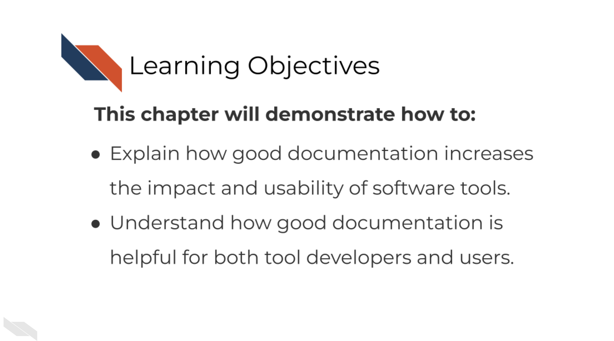
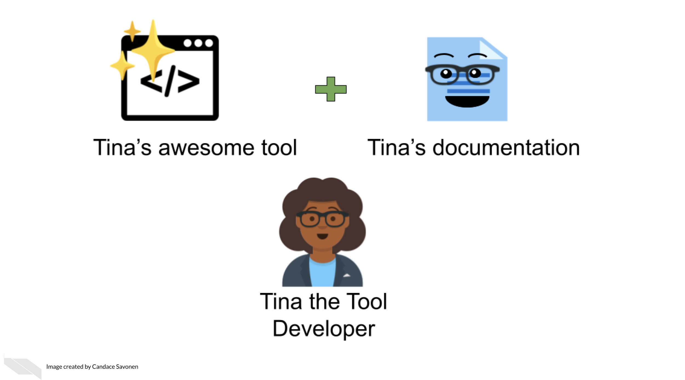

Chapter 5 Why Documentation is Worth the Time

5.1 The context of bioinformatics tool development
Biomedical software development comes in all shapes and sizes, but many researchers don’t realize the work they are doing is software development.
Software developers’ jobs are often defined something like this:
Software developers use programming to build software that meets the needs of users.
Let’s break this down:
Software is often meaning a collection of instructions, data, or computer programs that are used to run machines and carry out particular activities – this can include but isn’t limited to: - Scripts - Workflows - Pipelines - Algorithms and computational methods
Scientific software for cancer research includes all of the above items pretty frequently but scientists often don’t think of themselves as software developers. I think this is in part because they don’t picture that they have users.
But users can really be anyone! It may start as the person developing the software but may expand to collaborators, random internet strangers, and others in the broader scientific community. The scientific community is full of users!
So in fact, many scientific researchers are doing software development everyday! But many don’t have a computer science degree and many of them have never taken a programming class. Self-taught scientific programmers may dismiss themselves as being software developers since they often think of programming as a means to an end – a scientific question may be their main goal. But in the pursuit of that goal they are doing software development along the way!
Research, whether code is involved or not, is an exciting but long process – filled with side investigations, tedious troubleshooting, but also ‘Aha’ moments that ultimately can result in an amazing results that you should be proud of!
But the code and the methods you use are likely valuable to more than just the singular project you made it for. Indeed, others may have needs for the methods you use and will be excited to come across your code and tools!
Other researchers are likely eager to apply your code and methods to their own work but its unfortunately all too common that scientific code is not able to be reused. Even scientists who are skilled with analysis often struggle to make work reproducible. In a large-scale study, only 24% of scientific notebooks ran without errors and only 4.03% produced the same results.
There is a great need for reproducible work and a large part of reproducibility is clear and findable documentation! Open source code is a valuable practice for contributing to the scientific community but if the code lacks clear documentation it is incomplete. Undocumented code can lead to a lot of frustration and time inefficiently spent.
If a code base’s documentation is non-existent, scarce, out-of-date, or filled with too much jargon, the chances that no one will be able to successfully and efficiently re-use this work, despite their needs to do so.
Lack of usability often leads researchers to ditch even the most well-programmed of tools and code.
This is the unfortunate and all-too-common result of many bioinformatics code.
5.2 Bioinformatics and usability
The lack of emphasis on usability in bioinformatics software development not only hinders progress in cancer research but also undermines the efforts of software developers themselves, who have invested countless hours and significant effort into creating this software.
We know that bioinformatics software development doesn’t occur in a vacuum. User experience designers in the field of bioinformatics have commented on reasons why documentation and usability sometimes suffer for bioinformatics tools:
- Problem 1) Tools developed in academia are often left to deprecate after publication because novelty is often prioritized over long-term maintenance and usability (Mangul et al. 2019).
- Problem 2) Bioinformatics tool development teams generally don’t have the resources to hire user-centered design experts and the small and specialized user communities are often overbooked and not incentivized to give feedback (Pavelin et al. 2012).
- Problem 3) There is a lack of resources/education about usability specific to bioinformatics tool developing communities (Pavelin et al. 2012).
Unfortunately, this specific course cannot address issues 1 and 2, but will attempt to address problem 3.
5.3 Why documentation is worth the time
We realize many software developers feel unenthused about the process of creating documentation or may lack bandwidth to do so. They may know its good for their research, but they just aren’t enthused about it.
We’d like to assure you that the effort for creating documentation has a high return payoff for the continued success of your tool as a whole!


Other researchers are still likely encounter errors and problems, but with thorough and easy-to-digest documentation, they are better equipped to troubleshoot these problems! They may also learn more about the features and limitations of the code that will better guide their next steps!
This is not only helpful for other researchers but make it more likely that more individuals in the community will use these methods and share them in the community. These types of citations and usage metrics can be valuable to report to funding institutions to describe the impact of the work.
Well-documented software help developers better maintain their code in the future because they may forget the mechanics of their software over time.
This helps with manuscript revisions, transparency or future research that builds on these methods!